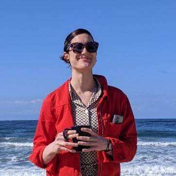

Alana Darcher

hello 🌻
I study how human brains process complex, naturalistic stimuli.
I'm a PhD candidate co-supervised by Florian Mormann at the Universitätsklinikum Bonn and Jakob Macke at the University of Tübingen.
Previously, I studied at Ludwig-Maximilians-Universität München and Emory University.
code packages
epiphyte | a worked solution for structuring naturalistic datasets for use across research centers | docs
Duplicate Event Removal | artifact detection in human single unit recordings | paper
preprints
Karkowski K., Kehl M.S., Qin Y., Darcher A., Karkowski P., Borger V., Surges R., Hebart M.N., Reber T.P., Dehaene S., Lakretz Y., Mormann F. (2025) Semantic Tuning of Single Neurons in the Human Medial Temporal Lobe. bioRxiv.
reviewed preprints
Gerken F.*, Darcher A.,*, Goncalves P.J., Rapp R., Elezi I., Niediek J., Kehl M.S., Reber T.P., Liebe S., Macke J.H., Mormann F., Leal-Taixe L. (2024) Decoding movie content from neuronal population activity in the human medial temporal lobe. eLife. * equal contribution.
select peer-reviewed articles
Bischoff, S., Darcher, A., Deistler, M., Gao, R., Gerken, F., Gloeckler, M., Haxel, L., Kapoor, J., Lappalainen, J.K., Macke, J.H., Moss, G., Pals, M., Pei, F., Rapp, R., Sağtekin, A.E., Schröder, C., Schulz, A., Stefanidi, Z., Toyota, S., Ulmer, L., and Vetter, J. (2024) A practical guide to statistical distances for evaluating generative models in science. Transactions on Machine Learning Research. Equal contribution across all authors.
Pesämaa I, Müller S.A., Robinson S., Darcher A., Paquet D., Zetterberg H., Lichtenthaler S.F., Haass C. (2023) A microglial activity state biomarker panel differentiates FTD-granulin and Alzheimer’s disease patients from controls. Molecular Neurodegeneration. 18(70)
Dehnen G., Kehl M.S., Darcher A., Müller T.T., Macke J.H., Borger V., Surges R., Mormann F. (2021) Duplicate detection of spike events: a relevant problem in human single-unit recordings. Brain Sciences.
For a complete list, check out my Google Scholar page.